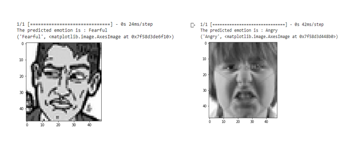
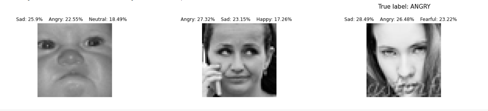
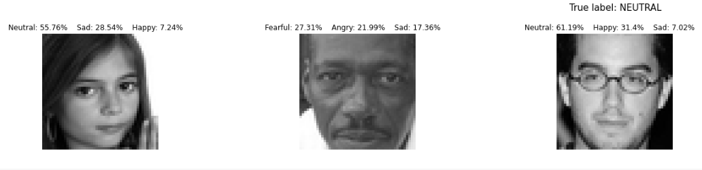

Emotion Detection - Implementation of a model using OpenCV and CNN
Convolutional Neural Networks are useful for a wide range of tasks, which shows how far deep learning has come in a short period of time. In this project, I have developed a model to detect emotions from facial features.
Dataset.
I used the FER 2013 dataset from Kaggle for my project. The only readily accessible dataset I could find for this purpose was this one. The emotion labels in the dataset are mapped to the corresponding pixel values in the current image using CSV files. It has seven emotions or classes (0 = angry, 1 = disgust, 2 = fear, 3 = happy, 4 = sad, 5 = surprise, 6 = neutral).
As we can see from the above figure, the classes are a little skewed.
Model
In order to create an image, we must translate the pixel values into their image form in Google Colab. In order to complete this task, I have used a the function. The function takes as input the dataset's pixels column and transforms each entry from a string to an array of integers that is then moulded into the images that will be used for training. Because some classes in the dataset contain a lot more examples than others, the dataset is a little bit skewed. Using RandomOverSampler, which oversamples the classes that are in lower numbers in a dataset, is one technique to get around this. It essentially replicates cases in the minority classes at random, which aids in balancing out the dataset. I have used RandomOverSampler to balance the dataset. I have used a CNN model to detect the emotions. Before training the model,the image emotion labels were converted to one-hot encoded, using to_categorical.Here we have 7 categories. And then, the model was trained for 30 epochs
Prediction Results


For detailed resutls of analysis and code please visit github from the below link.
View on Github